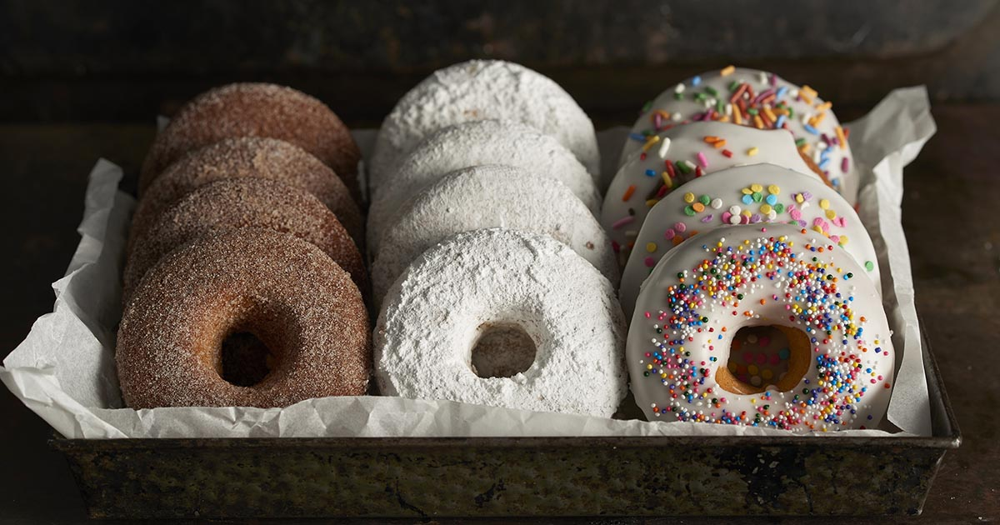

Contact
home
Contact
home
Hi! My name is Fairooz and I am a girl who codes from Queens, New York. I will be going to the 12th grade, in the fall of 2019, at Hillcrest Highschool. I'm also a part of the bowling team in my school and I love to bowl. Bowling brings me into a calm state of mind and lets me relax after a long day of school. During my free time, I either read mystery books or paint. One of my main hobbies is photography. I love to take pictures of nature and animals.
Bowling is actually something that I had joined freshmen year. Coming into 9th grade I was looking to join lots of new clubs and sports. At that time they were opening up spots for the bowling team. I've always played mini bowling games with plastic pins when I was little so it was actually really cool to see how bowling really works. All our games and practices would be held at Jib Lanes which was only a few stops away from my school.
"If you were born with the weakness to fall you were born with the strength to rise”- rupi kaur
"If you are working on something that you really care about, you don't have to be pushed.The Vision Pulls You.” – Steve Jobs
“Patience is a key element of success.”- Bill Gates
Baking is another thing that I love doing during my free time. I love baking desserts and pastries, especially cupcakes and cookies. I would always bake with my friends when they come over to hangout. Baking makes me really happy and brings my energy up alot. Also, the feeling of surprising your friends and family members with what you baked, is really good.
